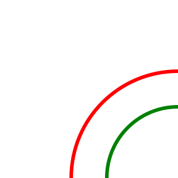

1º Crea cada uno de los ejemplos que aparecen el la práctica.
2º Crea un svg que aparezca un circulo de tamaño 300
dentro de otro tamaño 200. Con un width 300x300 y un
viewport de 250x250
2aº Crea un archivo independiente de svg con el archivo anterior.

3º Crea un svg que aparezcan cinco circulos de colores
degradados de rojo (fill:#550000, fill:880000, fill:AA0000,
fill:CC0000,fill:FF0000) cuyo rx se vaya desplazando 25 y
su radio vaya creciendo de 5 en 5.
4º Modifica el anterior para que el degradado sea en verdes
y se incremente sobre el eje cy y se se vaya desplazando de
25 en 25m de manera que el más oscuro salga encima de la pila
y su radio vaya creciendo de 5 en 5
5º Modifica el anterior para que el degradado sea en
amarillos,cyan y purpura y se incremente sobre el eje
cy y el cx de manera que salga esta figura.
6º Modifica los viewbox para que se vea solo esto.